Press kit
Facts, descriptions, screenshots, clips and art for writing about Critter Overlay. Use anything here in your coverage. For questions or a chat, email critteroverlay@gmail.com.
Fact sheet
- Name
- Critter Overlay
- What it is
- A desktop petLittle critters that live on your desktop while you work
- Platform
- Windows 10 and 11
- Price
- FreeTips are optional, on itch.io
- Source and releases
- github.com/hstagg/critter-overlay
- Made with
- Godot 4
- Language
- English
- Contact
- critteroverlay@gmail.com
Release history
- 3.1.1Early gifts for new players
- 3.1.0Homemade critters from any picture, and Stay on the desktop
- 3.0.1Fixes for long films, paused time and the Settings layout
- 3.0.0Rebuilt from the ground up: new art, rarity, the Collection, berries and the Shop
- 2.0.0A living desktop: a gait for every species, new Settings and critter sharing
- 1.7 to 1.10Custom critters, personality sliders, trails and sounds. 1.7.0 (17 May 2026) is the first release on GitHub.
Every release, with notes and installers, is on GitHub.
Descriptions
Short
Critter Overlay is a free desktop pet for Windows. Little critters wander your screen while you work, nap when you step away and pop when you click them. The longer you stay, the rarer the visitors.
Long
Critter Overlay puts small companions on your Windows desktop. Kittens, rabbits, ducklings, hedgehogs, turtles, squirrels, otters and pandas arrive while you work and wander over whatever you have open. Click one to pop it, drag it somewhere else or fling it across the screen. Step away and they curl up for a nap; come back and they wake.
There is a gentle game underneath. Time at your desk earns berries to spend on clothes, dyes, treats and beds. Every visitor rolls for rarity: by default about 1 in 25 is Rare, 1 in 143 is Epic and 1 in 1,000 is a Legendary visitor. Luck builds the longer you stay, and the Collection keeps everyone you meet.
Critters hide while a full-screen game, film or presentation is up, and nothing about you or your critters is sent anywhere. Critter Overlay is free on itch.io for Windows 10 and 11, and tips are welcome.
Features
On your desktop
- Eight everyday species, plus Legendary visitors
- Click to pop, drag to carry, fling to throw
- Critters greet, groom and play with each other
- They nap when you step away and wake when you return
- They hide during full-screen games, films and presentations
- Pause any time with Ctrl+Shift+P
- Stay on the desktop: critters can live behind your windows
Collecting
- Common, Rare and Epic looks for every species
- Legendary visitors in secret colours
- Luck that builds while you stay at your desk
- Rare Hour: an hour a day when rarer critters are twice as likely
- Your first visitor each day is Rare or better
- The Collection keeps everyone you meet
Making it yours
- Berries for focus time, spent in the Shop
- Clothes, dyes, treats, and beds for napping critters
- Homemade critters from any picture
- Size, speed, sound and how many come out
- Light and dark themes
- Updates install with one click
Screenshots

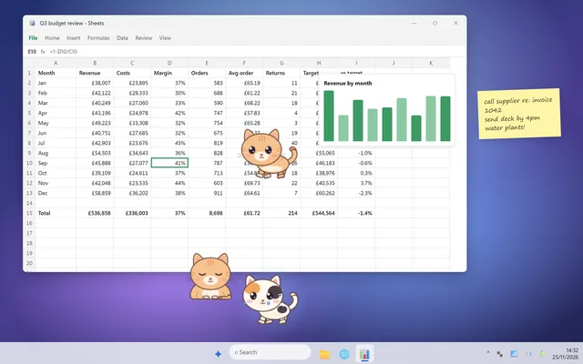

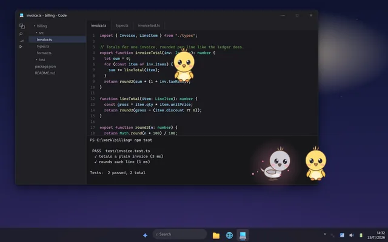

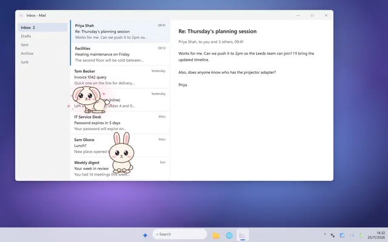

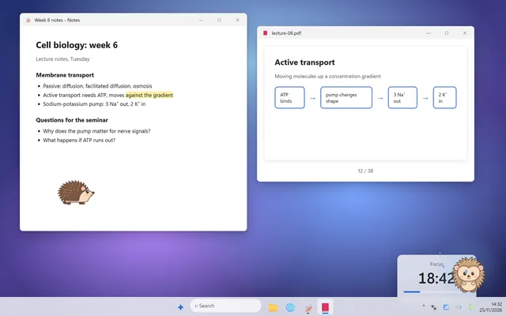

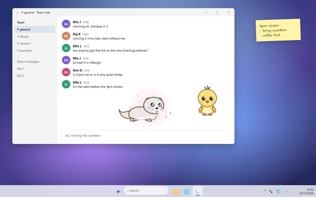

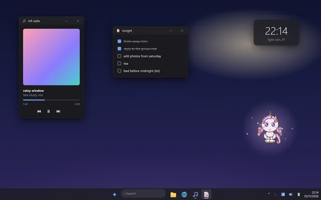
The desktops are staged: the apps behind the critters are mock-ups. The critters are recorded from the game.
The app

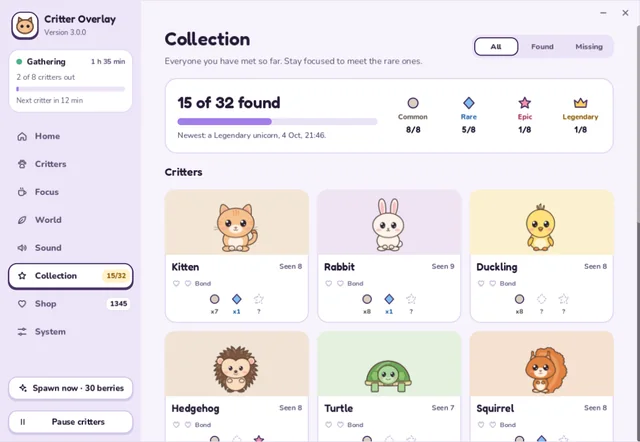

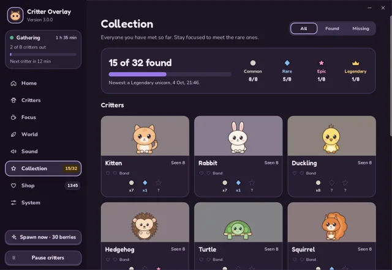

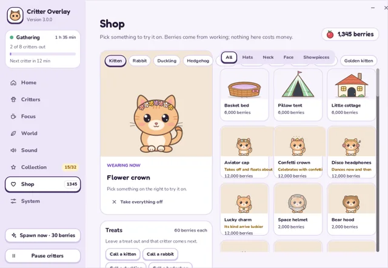

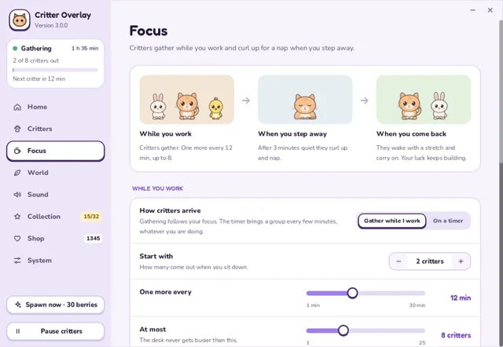
Clips and GIFs


The clips are silent, 960×600 and loop cleanly. More short videos are on our TikTok, Instagram and YouTube, @critteroverlay.
Logo and art

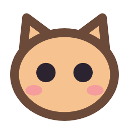

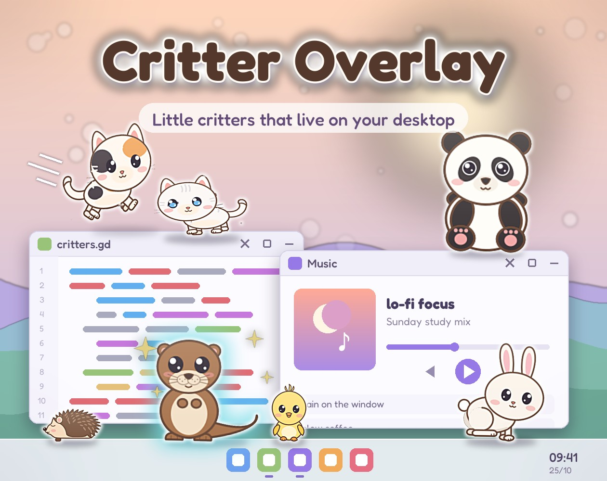


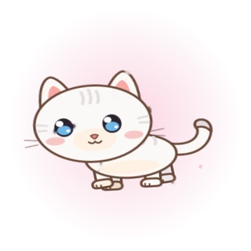

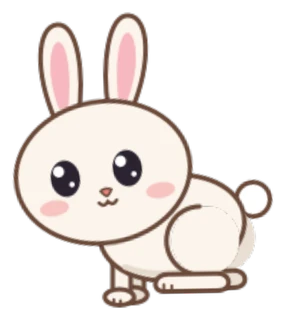

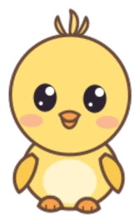

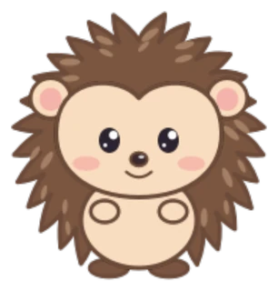

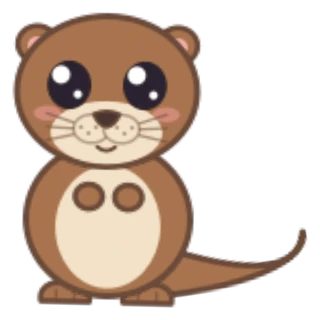

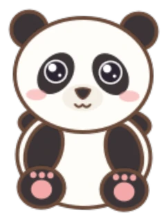